20. 可視化[発展]
20.1 概要
第17章では{ggplot2}の仕組みについて、第18章ではよく使われる5種類のプロット（棒グラフ、散布図、折れ線グラフ、箱ひげ図、ヒストグラム）の作り方を、第19章ではスケール、座標系などの操作を通じたグラフの見た目調整について解説しました。本章では第18章の延長線上に位置づけることができ、紹介しきれなかった様々なグラフの作り方について簡単に解説します。本章で紹介するグラフは以下の通りです。
- バイオリンプロット
- ラグプロット
- リッジプロット
- エラーバー付き散布図
- ロリーポップチャート
- 平滑化ライン
- ヒートマップ
- 等高線図
- 地図
- 非巡回有向グラフ
- バンプチャート
- 沖積図
- デンドログラム
- ツリーマップ
- モザイクプロット
Country_df <- read_csv("Data/Countries.csv")
COVID19_df <- read_csv("Data/COVID19_Worldwide.csv", guess_max = 10000)20.2 バイオリンプロット
Country_df %>%
ggplot() +
geom_violin(aes(x = Continent, y = PPP_per_capita, fill = Continent)) +
geom_boxplot(aes(x = Continent, y = PPP_per_capita),
width = 0.2) +
labs(y = "PPP per capita (USD)") +
scale_y_continuous(breaks = c(0, 1000, 10000, 100000),
labels = c(0, 1000, 10000, 100000),
trans = "log10") +
guides(fill = "none") +
theme_minimal(base_size = 12)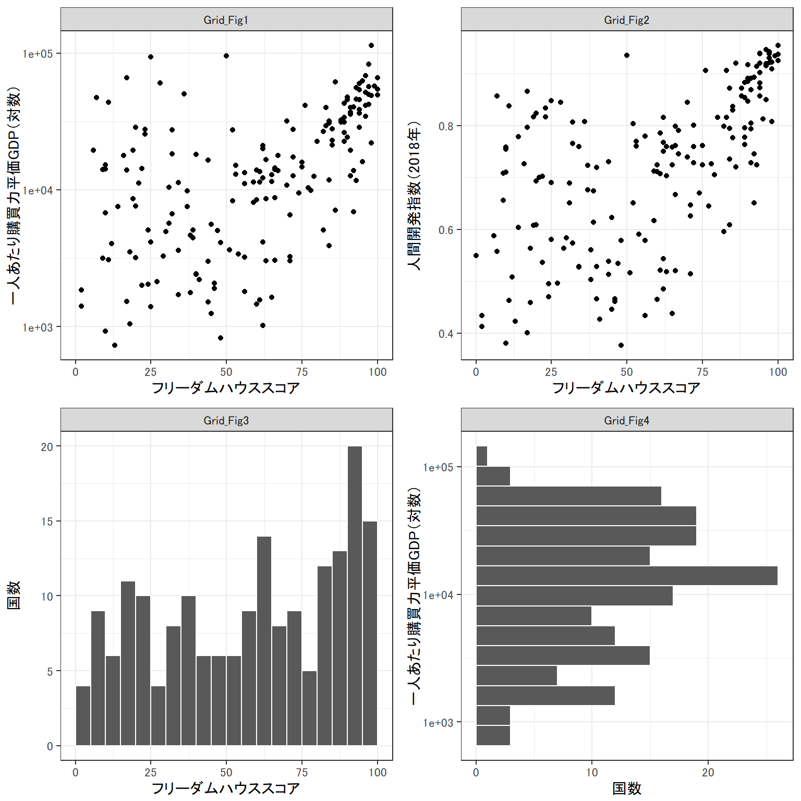
20.3 ラグプロット
Country_df %>%
ggplot() +
geom_point(aes(x = FH_Total, y = PPP_per_capita)) +
geom_rug(aes(x = FH_Total, y = PPP_per_capita)) +
labs(x = "Freedom House Score", y = "PPP per capita (USD)") +
scale_y_continuous(breaks = seq(0, 120000, by = 10000),
labels = seq(0, 120000, by = 10000)) +
guides(fill = "none") +
theme_minimal(base_size = 12)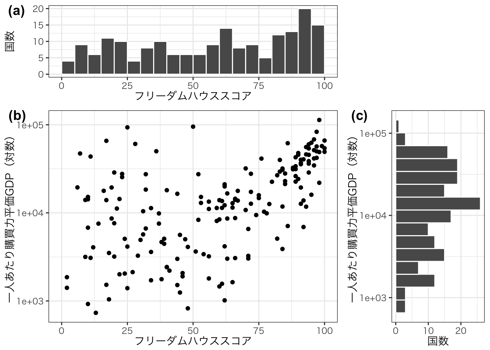
20.4 リッジプロット
# デフォルトのリッジプロット
Country_df %>%
ggplot() +
geom_density_ridges(aes(x = HDI_2018, y = Continent), alpha = 0.5) +
labs(x = "2018年人間開発指数", y = "大陸") +
theme_minimal(base_family = "HiraKakuProN-W3",
base_size = 12)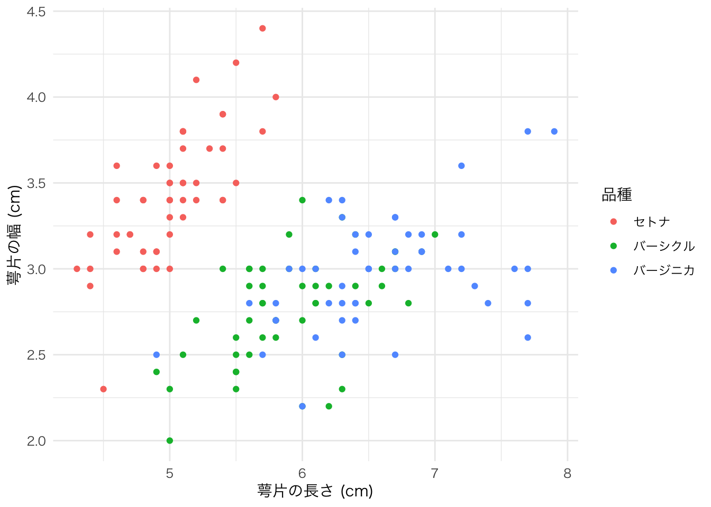
# ラグプロット付きのリッジプロット
Country_df %>%
ggplot() +
geom_density_ridges(aes(x = HDI_2018, y = Continent, fill = Continent),
alpha = 0.5, jittered_points = TRUE,
position = position_points_jitter(width = 0, height = 0),
point_shape = "|", point_size = 3) +
guides(fill = "none") +
labs(x = "2018年人間開発指数", y = "大陸") +
theme_minimal(base_family = "HiraKakuProN-W3",
base_size = 12)
# ヒストグラムのリッジプロット
Country_df %>%
ggplot() +
geom_density_ridges(aes(x = HDI_2018, y = Continent), alpha = 0.5,
stat = "binline", scale = 1) +
labs(x = "2018年人間開発指数", y = "大陸") +
theme_minimal(base_family = "HiraKakuProN-W3",
base_size = 12)
20.5 エラーバー付き散布図
Pointrange_df <- tibble(
Continent = c("Asia", "Europe", "Africa", "America"),
Coef = c(65.3, 588.0, 53.4, 316.0),
Conf_lwr = c(-250.0, 376.0, -14.5, 128.0),
Conf_upr = c(380.0, 801.0, 121.0, 504.0)
)## # A tibble: 4 x 4
## # Groups: Continent [4]
## Continent Coef Conf_lwr Conf_upr
## <chr> <dbl> <dbl> <dbl>
## 1 Asia 65.3 -250. 380.
## 2 Europe 588. 376. 801.
## 3 Africa 53.4 -14.5 121.
## 4 America 316. 128. 504.実は以上のデータは以下のようなコードで作成されています。{purrr}パッケージの使い方に慣れる必要があるので、第24章を参照してください。
Pointrange_df <- Country_df %>%
filter(Continent != "Oceania") %>%
group_by(Continent) %>%
nest() %>%
mutate(Fit = map(data, ~lm(PPP_per_capita ~ FH_Total, data = .)),
Est = map(Fit, broom::tidy, conf.int = TRUE)) %>%
unnest(Est) %>%
filter(term == "FH_Total") %>%
select(Continent, Coef = estimate,
Conf_lwr = conf.low, Conf_upr = conf.high) Country_df %>%
filter(Continent != "Oceania") %>%
group_by(Continent) %>%
nest() %>%
mutate(Fit = map(data, ~lm(PPP_per_capita ~ FH_Total, data = .)),
Est = map(Fit, broom::tidy, conf.int = TRUE)) %>%
unnest(Est) %>%
filter(term == "FH_Total") %>%
select(Continent, Coef = estimate,
Conf_lwr = conf.low, Conf_upr = conf.high) %>%
ggplot() +
geom_hline(yintercept = 0, linetype = 2) +
geom_pointrange(aes(x = Continent, y = Coef,
ymin = Conf_lwr, ymax = Conf_upr),
size = 0.75) +
labs(y = expression(paste(beta[1], " with 95% CI"))) +
theme_bw(base_size = 12)
20.6 ロリーポップチャート
Country_df %>%
filter(Continent == "Europe") %>%
drop_na(PPP_per_capita) %>%
ggplot() +
geom_bar(aes(y = Country, x = PPP_per_capita), stat = "identity") +
labs(x = "一人あたり購買力平価GDP", y = "国") +
theme_bw(base_family = "HiraKakuProN-W3",
base_size = 12)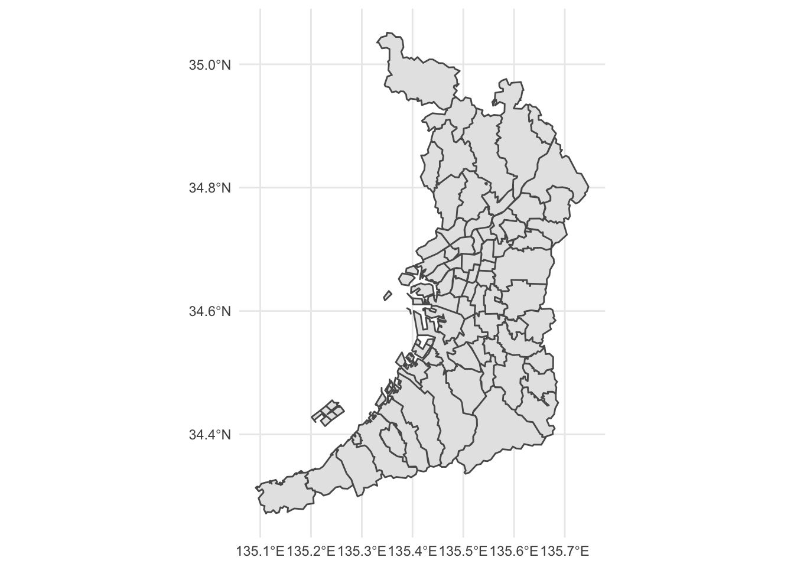
Country_df %>%
filter(Continent == "Europe") %>%
drop_na(PPP_per_capita) %>%
ggplot() +
geom_segment(aes(y = Country, yend = Country,
x = 0, xend = PPP_per_capita)) +
geom_point(aes(y = Country, x = PPP_per_capita), color = "orange") +
labs(x = "一人あたり購買力平価GDP (USD)", y = "国") +
theme_bw(base_family = "HiraKakuProN-W3",
base_size = 12) +
theme(panel.grid.major.y = element_blank(),
panel.border = element_blank(),
axis.ticks.y = element_blank())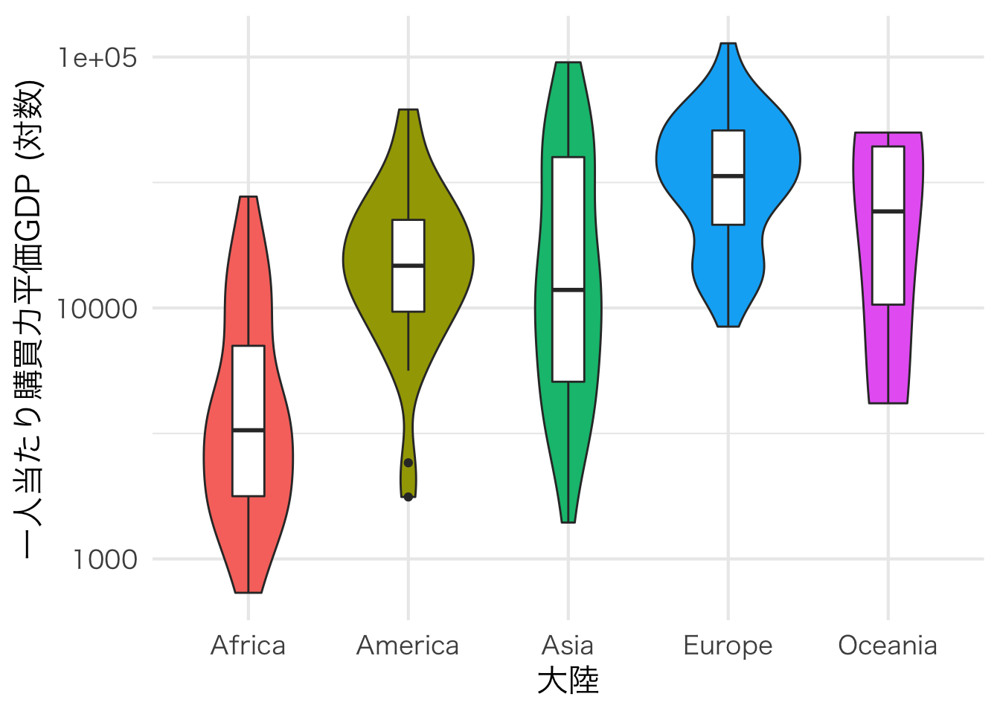
Country_df %>%
filter(Continent == "Europe") %>%
drop_na(PPP_per_capita) %>%
arrange(PPP_per_capita) %>%
mutate(Country = fct_inorder(Country)) %>%
ggplot() +
geom_segment(aes(y = Country, yend = Country,
x = 0, xend = PPP_per_capita)) +
geom_point(aes(y = Country, x = PPP_per_capita), color = "orange") +
labs(x = "一人あたり購買力平価GDP (USD)", y = "国") +
theme_bw(base_family = "HiraKakuProN-W3",
base_size = 12) +
theme(panel.grid.major.y = element_blank(),
panel.border = element_blank(),
axis.ticks.y = element_blank())20.7 平滑化ライン
Country_df %>%
ggplot(aes(x = FH_Total, y = PPP_per_capita)) +
geom_point() +
geom_smooth(formula = y ~ x,
method = "loess", se = TRUE) +
labs(x = "Freedom House Score", y = "PPP per capita (USD)") +
scale_y_continuous(breaks = seq(0, 120000, by = 10000),
labels = seq(0, 120000, by = 10000)) +
guides(fill = "none") +
theme_minimal(base_size = 12)Country_df %>%
mutate(OECD = if_else(OECD == 1, "加盟国", "非加盟国")) %>%
ggplot(aes(x = FH_Total, y = PPP_per_capita, color = OECD)) +
geom_point() +
geom_smooth(formula = y ~ x,
method = "lm", se = TRUE) +
labs(x = "Freedom House Score", y = "PPP per capita (USD)") +
scale_y_continuous(breaks = seq(0, 120000, by = 10000),
labels = seq(0, 120000, by = 10000)) +
coord_cartesian(ylim = c(0, 120000)) +
guides(fill = "none") +
theme_bw(base_family = "HiraKakuProN-W3",
base_size = 12)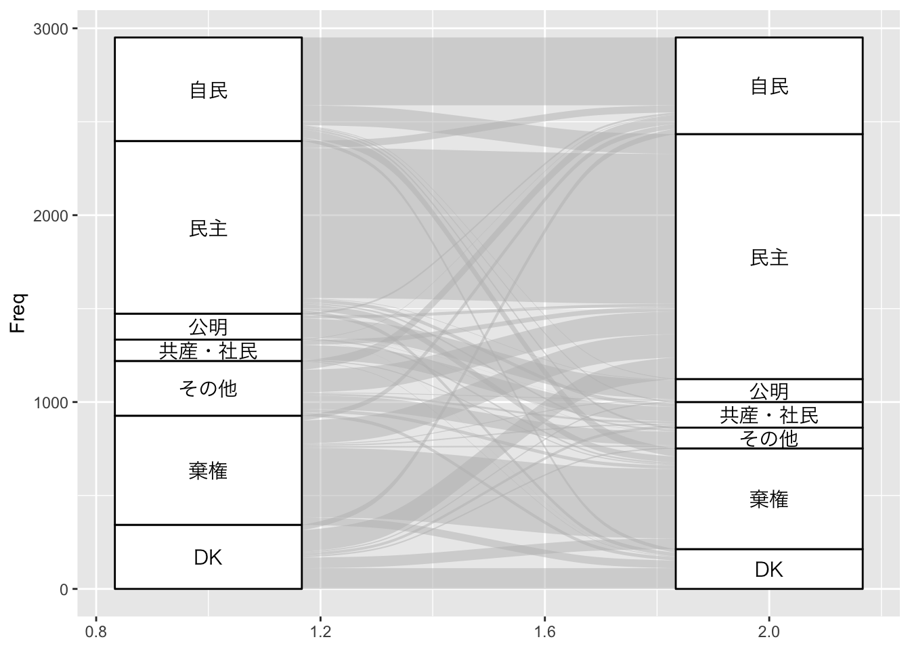
20.8 ヒートマップ
離散変数\(\times\)離散変数の同時分布
COVID19_df %>%
left_join(Country_df, by = "Country") %>%
filter(Continent == "Asia") %>%
separate(col = Date, into = c("Year", "Month", "Day")) %>%
mutate(Confirmed_per_capita = Confirmed_Day / Population * 1000000) %>%
group_by(Country, Month) %>%
summarise(Confirmed = sum(Confirmed_per_capita),
.groups = "drop") %>%
mutate(Confirmed = log10(Confirmed + 1),
Country = fct_inorder(Country),
Country = fct_rev(Country)) %>%
ggplot() +
geom_tile(aes(x = Month, y = Country, fill = Confirmed)) +
scale_fill_gradient2(low = "cornflowerblue",
mid = "cornsilk",
high = "brown3",
midpoint = 2)
20.9 等高線図
連続変数\(\times\)連続変数の同時分布
20.10 地図
20.11 非巡回有向グラフ
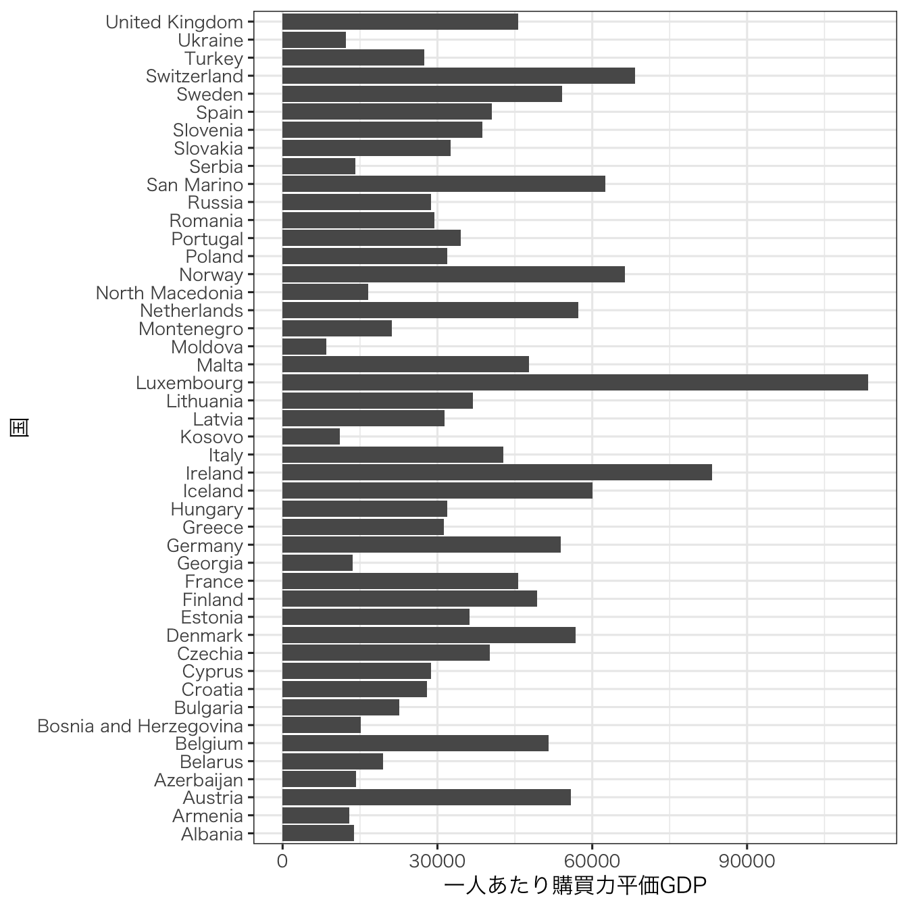
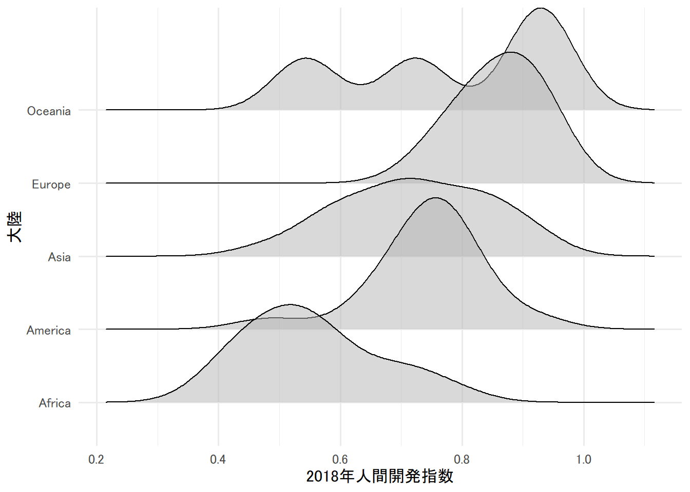
20.11.1 ノードの位置を指定する
DAG_Pos2 <- list(x = c(X = 1, Y = 3, Z = 2),
y = c(X = 1, Y = 1, Z = 2))
DAG_data2 <- dagify(X ~ Z,
Y ~ X + Z,
exposure = "X",
outcome = "Y",
coords = DAG_Pos2)
ggdag(DAG_data2) +
theme_dag_blank()DAG_Pos3 <- list(x = c(X1 = 3, X2 = 3, X3 = 1, T = 2, Y = 4),
y = c(X1 = 1, X2 = 2, X3 = 2, T = 3, Y = 3))
DAG_data3 <- dagify(Y ~ T + X1 + X2,
T ~ X2 + X3,
X2 ~ X1 + X3,
exposure = "T",
outcome = "Y",
coords = DAG_Pos3)
ggdag(DAG_data3, stylized = TRUE) +
theme_dag_blank()20.12 バンプチャート
20.13 沖積図
データは 中澤 (2014) の表3を元に筆者が作成したもの
| 変数名 | 説明 |
|---|---|
ID |
回答者ID |
Vote09 |
2009年衆院選における投票先 |
Vote10 |
2010年参院選における投票先 |
たとえば、1番目の回答者は2009年に棄権し、2010年も棄権したことを意味する。また、5番目の回答者は2009年に自民党に投票し、2010年は共産党または社民党に投票したことを意味する。
Vote_0910 <- Vote_0910 %>%
group_by(Vote09, Vote10) %>%
summarise(Freq = n(),
.groups = "drop")
Vote_0910## # A tibble: 47 x 3
## Vote09 Vote10 Freq
## * <chr> <chr> <int>
## 1 DK DK 111
## 2 DK その他 8
## 3 DK 棄権 57
## 4 DK 共産・社民 15
## 5 DK 公明 7
## 6 DK 自民 29
## 7 DK 民主 116
## 8 その他 DK 18
## 9 その他 その他 73
## 10 その他 棄権 18
## # … with 37 more rowsVote_0910 <- Vote_0910 %>%
mutate(Vote09 = factor(Vote09, levels = c("自民", "民主", "公明", "共産・社民",
"その他", "棄権", "DK")),
Vote10 = factor(Vote10, levels = c("自民", "民主", "公明", "共産・社民",
"その他", "棄権", "DK")))
Vote_0910 %>%
ggplot(aes(y = Freq, axis1 = Vote09, axis2 = Vote10)) +
geom_alluvium() +
geom_stratum() +
geom_text(aes(label = after_stat(stratum)), stat = "stratum",
family = "HiraKakuProN-W3")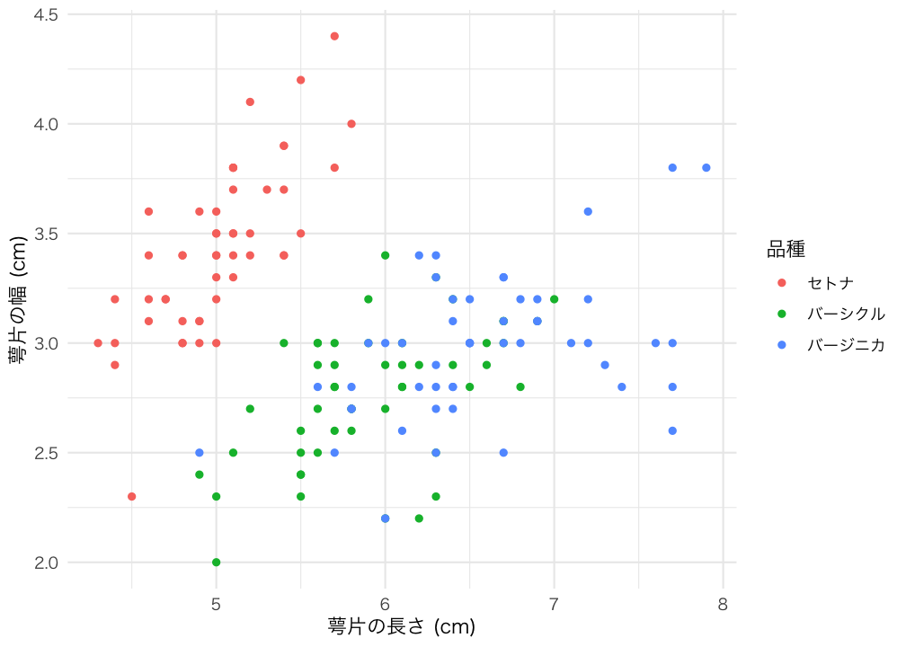
Vote_0910 %>%
ggplot(aes(y = Freq, axis1 = Vote09, axis2 = Vote10)) +
geom_alluvium(aes(fill = Vote09)) +
geom_stratum() +
geom_text(aes(label = after_stat(stratum)), stat = "stratum",
family = "HiraKakuProN-W3")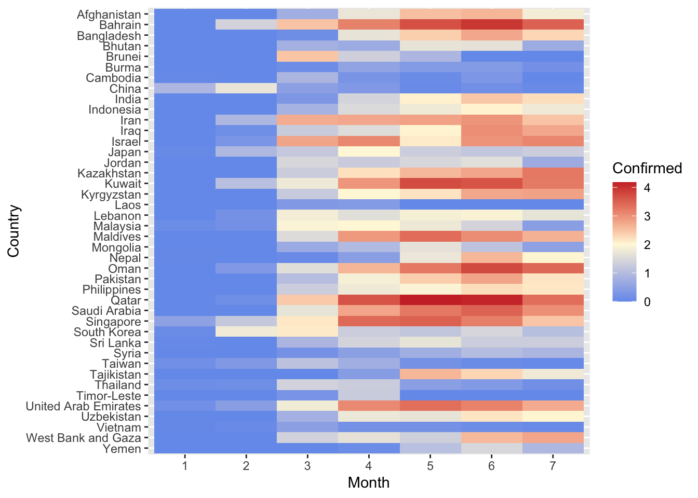
Alluvial_Plot <- Vote_0910 %>%
ggplot(aes(y = Freq, axis1 = Vote09, axis2 = Vote10)) +
geom_alluvium(aes(fill = Vote10)) +
geom_stratum() +
geom_text(aes(label = after_stat(stratum)), stat = "stratum",
family = "HiraKakuProN-W3")
Alluvial_Plot
Alluvial_Plot +
ggtitle("個人レベルにおける投票先の変化") +
scale_x_continuous(breaks = 1:2,
labels = c("2009年衆院選", "2010年参院選")) +
theme_minimal(base_family = "HiraKakuProN-W3",
base_size = 16) +
theme(legend.position = "none",
panel.grid = element_blank(),
axis.title = element_blank(),
axis.text.y = element_blank())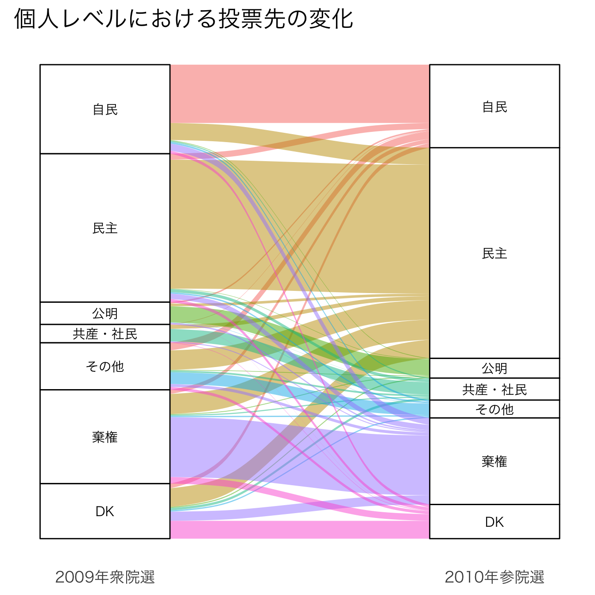
20.14 デンドログラム
20.15 ツリーマップ
Country_df %>%
filter(Continent == "Asia") %>%
ggplot(aes(area = Population, label = Country)) +
geom_treemap() +
geom_treemap_text(colour = "white", place = "centre")
Country_df %>%
filter(Continent == "Asia") %>%
ggplot(aes(area = Population, label = Country)) +
geom_treemap() +
geom_treemap_text(colour = "white", place = "centre",
grow = TRUE)
Country_df %>%
filter(Continent == "Asia") %>%
ggplot(aes(area = Population, fill = HDI_2018,
label = Country)) +
geom_treemap() +
geom_treemap_text(colour = "white", place = "centre",
grow = TRUE) +
scale_fill_gradient2(low = "brown3",
mid = "cornsilk",
high = "cornflowerblue",
midpoint = 0.7) +
labs(fill = "UN Human Development Index (2018)") +
ggtitle("Population in Asia") +
theme(legend.position = "bottom")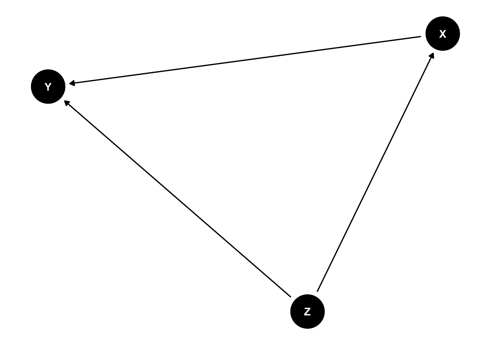
20.16 モザイクプロット
##
## DK その他 棄権 共産・社民
## DK 111 8 57 15
## その他 18 73 18 11
## 棄権 41 8 372 7
## 共産・社民 3 0 6 77
## 公明 1 2 9 1
## 自民 19 11 44 7
## 民主 20 9 33 19
##
## 公明 自民 民主
## DK 7 29 116
## その他 4 48 121
## 棄権 5 26 125
## 共産・社民 0 3 25
## 公明 100 10 16
## 自民 4 363 106
## 民主 3 38 802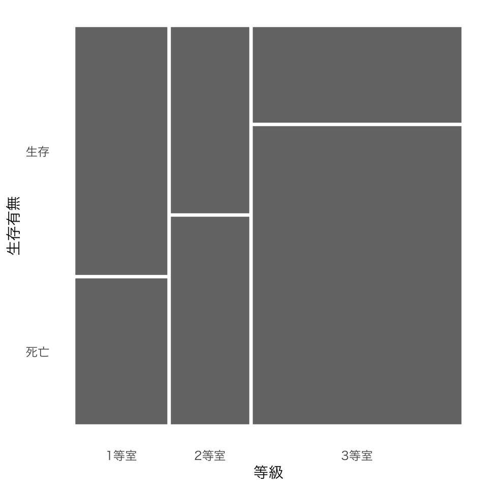
Vote_0910 <- Vote_0910 %>%
mutate(Vote09 = factor(Vote09, levels = c("自民", "民主", "公明", "共産・社民",
"その他", "棄権", "DK")),
Vote10 = factor(Vote10, levels = c("自民", "民主", "公明", "共産・社民",
"その他", "棄権", "DK")))Vote_0910 %>%
ggplot() +
geom_mosaic(aes(x = product(Vote09, Vote10)), na.rm = TRUE) +
labs(x = "2009年衆院選の投票先", y = "2010年参院選の投票先") +
theme_minimal(base_family = "HiraKakuProN-W3") +
theme(panel.grid = element_blank())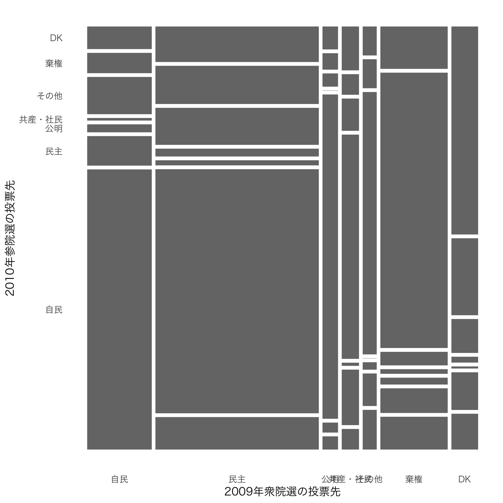
Vote_0910 %>%
ggplot() +
geom_mosaic(aes(x = product(Vote10, Vote09), fill = Vote10), na.rm = TRUE) +
labs(x = "2009年衆院選の投票先", y = "2010年参院選の投票先") +
theme_minimal(base_family = "HiraKakuProN-W3") +
theme(legend.position = "none",
panel.grid = element_blank(),
axis.text.x = element_text(angle = 90, vjust = 0.5, hjust = 1))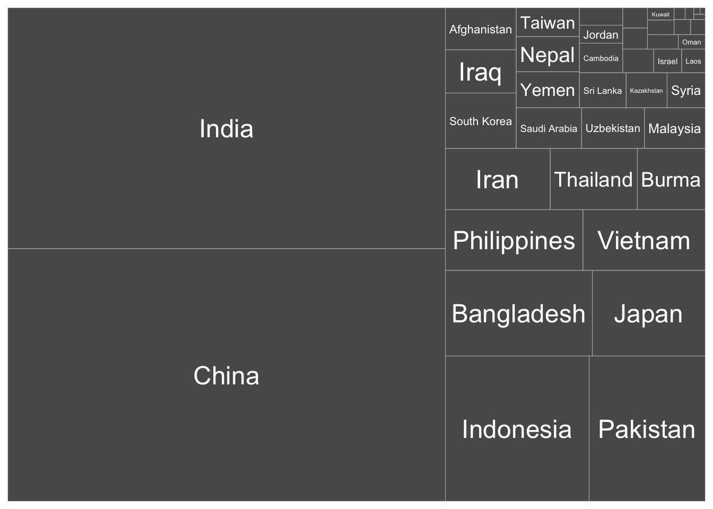
20.17 その他のグラフ
The R Graph Galleryでは本書で紹介できなかった様々な図のサンプルおよびコードを見ることができます。ここまで読み終わった方なら問題なくコードの意味が理解できるでしょう。{ggplot2}では作成できないグラフ（アニメーションや3次元図、インタラクティブなグラフ）についても、他のパッケージを利用した作成方法について紹介されているので、「こんな図が作りたいけど、作り方が分からん！」の時には、まずThe R Graph Galleryに目を通してみましょう。